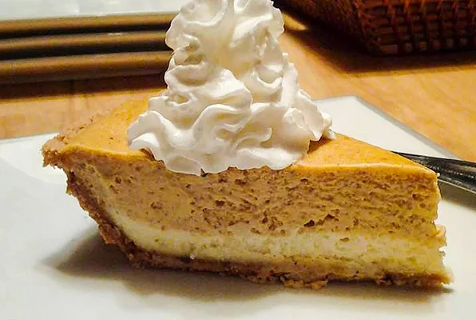

A Great Cheesecake Recipe

Description
A great alternative to pumpkin pie, especially for those cheesecake fans out there. Serve topped with whipped cream.
Ingredients
- 2 (8 ounce) packages cream cheese, softened
- ½ cup white sugar
- ½ teaspoon vanilla extract
- 2 eggs
- 1 (9 inch) prepared graham cracker crust
- ½ cup pumpkin puree
- ½ teaspoon ground cinnamon
- 1 pinch ground cloves
- 1 pinch ground nutmeg
- ½ cup frozen whipped topping, thawed
Steps
- Preheat oven to 325 degrees F (165 degrees C).
- In a large bowl, combine cream cheese, sugar and vanilla. Beat until smooth. Blend in eggs one at a time. Remove 1 cup of batter and spread into bottom of crust; set aside.
- Add pumpkin, cinnamon, cloves and nutmeg to the remaining batter and stir gently until well blended. Carefully spread over the batter in the crust.
- Bake in preheated oven for 35 to 40 minutes, or until center is almost set. Allow to cool, then refrigerate for 3 hours or overnight. Cover with whipped topping before serving.